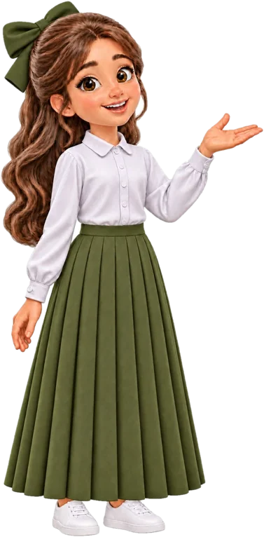

درس مقسّم إلى جزأين، ولكل جزء: مختبر افتراضي، ولعبة، وواقع معزّز، وورقة عمل تفاعلية.
المعلمة: فاطمه الزربان • قائدة المدرسة: الجوهره الجريذي • مجمع جو التعليمي
العدد الذري • النظائر • العدد الكتلي • القوة النووية الهائلة • التحلل الإشعاعي • جسيمات ألفا
جسيمات بيتا • معدل التحلل وعمر النصف • التأريخ بالكربون • العناصر المصنّعة • النظائر المتتبعة